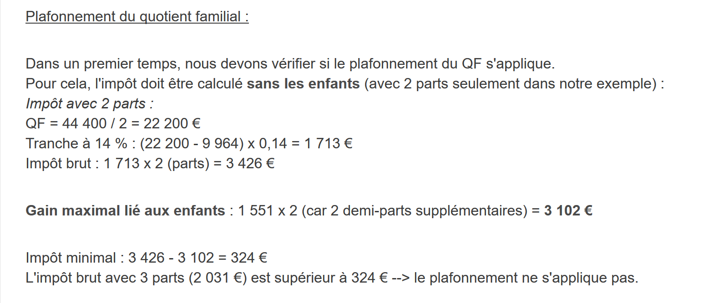
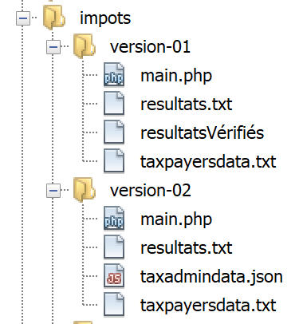

4. Ejercicio práctico – versiones 1 y 2
4.1. El problema

La tabla anterior permite calcular el impuesto en el caso simplificado de un contribuyente que solo tiene que declarar su salario. Como indica la nota (1), el impuesto así calculado es el impuesto antes de aplicar tres mecanismos:
- la limitación del coeficiente familiar que se aplica a las rentas altas;
- la deducción y la reducción de impuestos que se aplican a las rentas bajas;
Así, el cálculo del impuesto comprende los siguientes pasos [http://impotsurlerevenu.org/comprendre-le-calcul-de-l-impot/1217-calcul-de-l-impot-2019.php]:

Nos proponemos escribir un programa que permita calcular el impuesto de un contribuyente en el caso simplificado de un contribuyente que solo tenga que declarar su salario:
4.1.1. Cálculo del impuesto bruto
El impuesto bruto se puede calcular de la siguiente manera:
En primer lugar, se calcula el número de participaciones del contribuyente:
- cada progenitor aporta 1 parte;
- los dos primeros hijos aportan cada uno 1/2 parte;
- los hijos siguientes aportan una parte cada uno:
Por lo tanto, el número de partes es:
- nbParts=1+nbEnfants*0,5+(n.º de hijos-2)*0,5 si el empleado no está casado;
- nbParts = 2 + nbEnfants * 0,5 + (nbEnfants - 2) * 0,5 si está casado;
donde nbEnfants es su número de hijos;
- se calcula la renta imponible R = 0,9 * S, donde S es el salario anual;
- se calcula el coeficiente familiar QF = R / nbParts;
- se calcula el impuesto bruto I a partir de los siguientes datos (2019):
9964 | 0 | 0 |
27519 | 0,14 | 1394,96 |
73779 | 0,3 | 5798 |
156 244 | 0,41 | 13913,69 |
0 | 0,45 | 20163,45 |
Cada línea tiene 3 campos: campo1, campo2, campo3. Para calcular el impuesto I, se busca la primera línea donde QF <= campo1 y se toman los valores de esa línea. Por ejemplo, para un empleado casado con dos hijos y un salario anual S de 50 000 euros:
Renta imponible: R=0,9*S=45 000
Número de cuotas: nbParts=2+2*0,5=3
Cotización familiar: QF=45 000/3=15 000
La primera línea en la que QF <= campo1 es la siguiente:
El impuesto I es entonces igual a 0,14*R – 1394,96*nbParts=[0,14*45000-1394,96*3]=2115. El impuesto se redondea al euro inferior.
Si la relación QF <= campo1 se cumple desde la primera línea, entonces el impuesto es nulo.
Si QF es tal que la relación QF<=campo1 nunca se cumple, entonces se utilizan los coeficientes de la última línea. En este caso:
lo que da el impuesto bruto I = 0,45*R – 20 163,45*nbParts.
4.1.2. Límite máximo del coeficiente familiar

Para saber si se aplica el límite máximo del coeficiente familiar QF, se vuelve a calcular el impuesto bruto sin tener en cuenta a los hijos. Siguiendo con el ejemplo del asalariado casado con dos hijos y un salario anual S de 50 000 euros:
Renta imponible: R = 0,9 * S = 45 000
Número de partes: nbParts=2 (ya no se cuentan los hijos)
Cotización familiar: QF = 45 000 / 2 = 22 500
La primera línea en la que QF <= campo1 es la siguiente:
El impuesto I es, por tanto, igual a 0,14*R – 1394,96*nbParts=[0,14*45000-1394,96*2]=3510.
Ganancia máxima relacionada con los hijos: 1551 * 2 = 3102 euros
Impuesto mínimo: 3510-3102 = 408 euros
El impuesto bruto con 3 partes, ya calculado en 2115 euros, es superior al impuesto mínimo de 408 euros, por lo que el límite máximo familiar no se aplica en este caso.
En general, el impuesto bruto es sup(impuesto1, impuesto2), donde:
- [impôt1]: es el impuesto bruto calculado con los hijos;
- [impôt2]: es el impuesto bruto calculado sin los hijos y reducido en la ganancia máxima (en este caso, 1551 euros por media parte) relacionada con los hijos;
4.1.3. Cálculo de la reducción

Siguiendo con el ejemplo del asalariado casado con dos hijos y un salario anual S de 50 000 euros:
El impuesto bruto (2115) resultante del paso anterior es inferior a 2627 euros para una pareja (1595 euros para una persona soltera): por lo tanto, se aplica la reducción. Se obtiene mediante el siguiente cálculo:
descuento = umbral (pareja = 1970 / soltero = 1196) - 0,75 * Impuesto bruto
descuento = 1970 - 0,75 * 2115 = 383,75, redondeado a 384 euros.
Nuevo impuesto bruto = 2115 - 384 = 1731 euros
4.1.4. Cálculo de la reducción de impuestos

Por debajo de un determinado umbral, se aplica una reducción del 20 % sobre el impuesto bruto resultante de los cálculos anteriores. En 2019, los umbrales son los siguientes:
- soltero: 21 037 euros;
- pareja: 42 074 euros; (la cifra de 37 968 utilizada en el ejemplo anterior parece errónea);
Este umbral se incrementa en el valor: 3797 * (número de medias partes aportadas por los hijos).
Siguiendo con el ejemplo del asalariado casado con dos hijos y un salario anual S de 50 000 euros:
- su renta imponible (45 000 euros) es inferior al umbral (42 074 + 2 × 3797) = 49 668 euros;
- por lo tanto, tiene derecho a una reducción del 20 % de su impuesto: 1731 * 0,2 = 346,2 euros, redondeado a 347 euros;
- el impuesto bruto del contribuyente pasa a ser: 1731 - 347 = 1384 euros;
4.1.5. Cálculo del impuesto net
Nuestro cálculo se detendrá aquí: el impuesto net a pagar será de 1384 euros. En la realidad, el contribuyente puede beneficiarse de otras reducciones, en particular por donaciones a organismos de interés público o general.
4.1.6. Caso de las rentas altas
Nuestro ejemplo anterior corresponde a la mayoría de los casos de asalariados. Sin embargo, el cálculo del impuesto es diferente en el caso de las rentas altas.
4.1.6.1. Límite máximo de la reducción del 10 % sobre los ingresos anuales
En la mayoría de los casos, la renta imponible se obtiene mediante la fórmula: R = 0,9 * S, donde S es el salario anual. A esto se le denomina la reducción del 10 %. Esta reducción tiene un límite máximo. En 2019:
- no puede ser superior a 12 502 euros;
- no puede ser inferior a 437 euros;
Tomemos el caso de un asalariado soltero sin hijos y con un salario anual de 200 000 euros:
- la reducción del 10 % es de 20 000 euros > 12 502 euros. Por lo tanto, se reduce a 12 502 euros;
4.1.6.2. Límite máximo del coeficiente familiar
Tomemos un caso en el que se aplica el límite máximo familiar mencionado en el párrafo anterior. Tomemos el caso de una pareja con tres hijos y unos ingresos anuales de 100 000 euros. Repasemos los pasos del cálculo:
- la deducción del 10 % es de 10 000 euros < 12 502 euros. La renta imponible R es, por lo tanto, 100 000 - 10 000 = 90 000 euros;
- La pareja tiene nbParts = 2 + 0,5 × 2 + 1 = 4 puntos;
- por lo tanto, su coeficiente familiar es QF= R/nbParts=90 000/4=22 500 euros;
- su impuesto bruto I1 con hijos es I1=0,14*90000-1394,96*4= 7020 euros;
- su impuesto bruto I2 sin hijos:
- QF = 90 000 / 2 = 45 000 euros;
- I2 = 0,3 × 90 000 − 5798 × 2 = 15 404 euros;
- la regla del límite máximo del coeficiente familiar establece que la ganancia aportada por los hijos no puede superar (1551*4 medias partes)=6204 euros. Sin embargo, en este caso es I2-I1=15404-7020= 8384 euros, por lo que es superior a 6204 euros;
- por lo tanto, el impuesto bruto se recalcula como I3 = I2-6204 = 15 404 - 6 204 = 9 200 euros;
Esta pareja no tendrá ni bonificación ni reducción y su impuesto final será de 9200 euros.
4.1.7. Cifras oficiales
El cálculo del impuesto es complejo. A lo largo de todo el documento, las pruebas se realizarán con los siguientes ejemplos. Los resultados son los del simulador de la administración tributaria:
Contribuyente | Resultados oficiales | Resultados del algoritmo del documento |
Pareja con 2 hijos y unos ingresos anuales de 55 555 euros | Impuesto = 2815 euros Tipo impositivo = 14 % | Impuesto = 2814 euros Tipo impositivo = 14 % |
Pareja con dos hijos y unos ingresos anuales de 50 000 euros | Impuesto = 1385 euros Descuento = 720 euros Reducción = 0 euros Tipo impositivo = 14 % | Impuesto = 1384 euros Descuento = 384 euros Descuento = 347 euros Tipo impositivo = 14 % |
Pareja con 3 hijos y unos ingresos anuales de 50 000 euros | Impuesto = 0 euros Descuento = 384 euros Descuento = 346 euros Tipo impositivo = 14 % | Impuesto = 0 euros Descuento = 720 euros Reducción = 0 euros Tipo impositivo = 14 % |
Soltero con 2 hijos y unos ingresos anuales de 100 000 euros | Impuesto = 19 884 euros Descuento = 0 euros Descuento = 0 euros Tipo impositivo = 41 % | Impuesto = 19 884 euros Recargo = 4480 euros Descuento = 0 euros Reducción = 0 euros Tipo impositivo = 41 % |
Soltero con 3 hijos y unos ingresos anuales de 100 000 euros | Impuesto = 16 782 euros Descuento = 0 euros Descuento = 0 euros Tipo impositivo = 41 % | Impuesto = 16 782 euros Recargo = 7176 euros Descuento = 0 euros Reducción = 0 euros Tipo impositivo = 41 % |
Pareja con 3 hijos y unos ingresos anuales de 100 000 euros | Impuesto = 9200 euros Descuento = 0 euros Descuento = 0 euros Tipo impositivo = 30 % | Impuesto = 9200 euros Recargo = 2180 euros Descuento = 0 euros Reducción = 0 euros Tipo impositivo = 30 % |
Pareja con 5 hijos y unos ingresos anuales de 100 000 euros | Impuesto = 4230 euros Descuento = 0 euros Descuento = 0 euros Tipo impositivo = 14 % | Impuesto = 4230 euros Descuento = 0 euros Descuento = 0 euros Tipo impositivo = 14 % |
Soltero sin hijos y con unos ingresos anuales de 100 000 euros | Impuesto = 22 986 euros Descuento = 0 euros Descuento = 0 euros Tipo impositivo = 41 % | Impuesto = 22 986 euros Recargo = 0 euros Descuento = 0 euros Reducción = 0 euros Tipo impositivo = 41 % |
Pareja con 2 hijos y unos ingresos anuales de 30 000 euros | Impuesto = 0 euros Descuento = 0 euros Descuento = 0 euros Tipo impositivo = 0 % | Impuesto = 0 euros Descuento = 0 euros Reducción = 0 euros Tipo impositivo = 0 % |
Soltero sin hijos y con unos ingresos anuales de 200 000 euros | Impuesto = 64 211 euros Descuento = 0 euros Descuento = 0 euros Tipo impositivo = 45 % | Impuesto = 64 210 euros Recargo = 7498 euros Descuento = 0 euros Reducción = 0 euros Tipo impositivo = 45 % |
Pareja con 3 hijos y unos ingresos anuales de 200 000 euros | Impuesto = 42 843 euros Descuento = 0 euros Descuento = 0 euros Tipo impositivo = 41 % | Impuesto = 42 842 euros Recargo = 17 283 euros Descuento = 0 euros Reducción = 0 euros Tipo impositivo = 41 % |
En el ejemplo anterior, se denomina recargo a lo que pagan de más las rentas altas debido a dos fenómenos:
- el límite máximo del 10 % de la deducción sobre los ingresos anuales;
- el límite máximo del coeficiente familiar;
Este indicador no se ha podido verificar, ya que el simulador de la administración tributaria no lo proporciona.
Se observa que el algoritmo del documento da un impuesto correcto en todos los casos, aunque con un margen de error de 1 euro. Este margen de error se debe a los redondeos. Todas las cantidades de dinero se redondean a veces al euro superior, a veces al euro inferior. Como no conocía las normas oficiales, las cantidades del algoritmo del documento se han redondeado:
- al euro superior para los descuentos y reducciones;
- al euro inferior para los recargos y el impuesto final;
A continuación, se realizarán pruebas para verificar la validez de los resultados. Se llevarán a cabo con los ejemplos de la tabla anterior con un margen de error aceptado de 1 euro.
4.2. El árbol de scripts

4.3. Version 1
4.3.1. El algoritmo
Presentamos un primer programa en el que:
- los datos necesarios para el cálculo del impuesto están codificados de forma fija en el código en forma de tablas y constantes;
- los datos de los contribuyentes (estado civil, hijos, salario) se encuentran en un primer archivo de texto [taxpayersdata.txt];
- los resultados del cálculo del impuesto (estado civil, hijos, salario, impuesto) se almacenan en un segundo archivo de texto [resultats.txt];
El script [version-01/main.php] es el siguiente:
<?php
// tipos estrictos para los parámetros de las funciones
declare(strict_types=1);
// constantes globales
define("PLAFOND_QF_DEMI_PART", 1551);
define("PLAFOND_REVENUS_CELIBATAIRE_POUR_REDUCTION", 21037);
define("PLAFOND_REVENUS_COUPLE_POUR_REDUCTION", 42074);
define("VALEUR_REDUC_DEMI_PART", 3797);
define("PLAFOND_DECOTE_CELIBATAIRE", 1196);
define("PLAFOND_DECOTE_COUPLE", 1970);
define("PLAFOND_IMPOT_COUPLE_POUR_DECOTE", 2627);
define("PLAFOND_IMPOT_CELIBATAIRE_POUR_DECOTE", 1595);
define("ABATTEMENT_DIXPOURCENT_MAX", 12502);
define("ABATTEMENT_DIXPOURCENT_MIN", 437);
// definición de constantes locales
$DATA = "taxpayersdata.txt";
$RESULTATS = "resultats.txt";
$limites = array(9964, 27519, 73779, 156244, 0);
$coeffR = array(0, 0.14, 0.3, 0.41, 0.45);
$coeffN = array(0, 1394.96, 5798, 13913.69, 20163.45);
// lectura de datos
$data = fopen($DATA, "r");
if (!$data) {
print "Impossible d'ouvrir en lecture le fichier des données [$DATA]\n";
exit;
}
// apertura del archivo de resultados
$résultats = fopen($RESULTATS, "w");
if (!$résultats) {
print "Impossible de créer le fichier des résultats [$RESULTATS]\n";
exit;
}
// se procesa la línea actual del archivo de datos
while ($ligne = fgets($data, 100)) {
// se elimina cualquier carácter de fin de línea
$ligne = cutNewLineChar($ligne);
// se recuperan los 3 campos «casado:hijos:salario» que forman $ligne
list($marié, $enfants, $salaire) = explode(",", $ligne);
// se calcula el impuesto
$result = calculImpot($marié, (int) $enfants, (float) $salaire, $limites, $coeffR, $coeffN);
// se introduce el resultado en el archivo de resultados
$result = ["marié" => $marié, "enfants" => $enfants, "salaire" => $salaire] + $result;
fputs($résultats, \json_encode($result, JSON_UNESCAPED_UNICODE) . "\n");
// dato siguiente
}
// se cierran los archivos
fclose($data);
fclose($résultats);
// fin
exit;
// --------------------------------------------------------------------------
function cutNewLinechar(string $ligne): string {
// se elimina el marcador de fin de línea de $ligne si existe
$L = strlen($ligne); // longitud de línea
while (substr($ligne, $L - 1, 1) === "\n" or substr($ligne, $L - 1, 1) === "\r") {
$ligne = substr($ligne, 0, $L - 1);
$L--;
}
// fin
return($ligne);
}
// cálculo del impuesto
// --------------------------------------------------------------------------
function calculImpot(string $marié, int $enfants, float $salaire, array $limites, array $coeffR, array $coeffN): array {
…
// resultado
return ["impôt" => floor($impot), "surcôte" => $surcôte, "décôte" => $décôte, "réduction" => $réduction, "taux" => $taux];
}
// --------------------------------------------------------------------------
function calculImpot2(string $marié, int $enfants, float $salaire, array $limites, array $coeffR, array $coeffN): array {
…
// resultado
return ["impôt" => $impôt, "surcôte" => $surcôte, "taux" => $coeffR[$i]];
}
// revenuImposable=salarioAnual-desgravación
// la deducción tiene un mínimo y un máximo
function getRevenuImposable(float $salaire): float {
…
// resultado
return floor($revenuImposable);
}
// calcula una posible reducción
function getDecote(string $marié, float $salaire, float $impots): float {
…
// resultado
return ceil($décôte);
}
// calcula una posible reducción
function getRéduction(string $marié, float $salaire, int $enfants, float $impots): float {
/…
// resultado
return ceil($réduction);
}
El archivo de datos taxpayersdata.txt (casado, hijos, salario):
Los archivos résultats.txt (estado civil, hijos, salario, impuestos, recargo, descuento, reducción, tipo impositivo) de los resultados obtenidos:
Comentarios
- línea 4: se exige el estricto cumplimiento del tipo de los parámetros de las funciones;
- líneas 7-16: definición de todas las constantes necesarias para el cálculo del impuesto;
- línea 19: el nombre del archivo de texto que contiene los datos de los contribuyentes (casado, hijos, salario);
- línea 20: el nombre del archivo de texto que contiene los resultados (estado civil, hijos, salario, impuesto) del cálculo del impuesto;
- líneas 21-23: las tres tablas de datos que definen los diferentes tramos impositivos del cálculo del impuesto;
- líneas 26-30: apertura en modo lectura [r] del archivo de datos de los contribuyentes. La función [fopen] devuelve el valor booleano FALSE si no se ha podido realizar la apertura;
- líneas 33-37: apertura en modo escritura [w] del archivo de resultados;
- líneas 40-51: bucle de lectura de las líneas (estado civil, hijos, salario) del archivo de datos de contribuyentes;
- línea 40: la función [fgets] lee 100 caracteres y se detiene en el primer marcador de fin de línea que encuentra. Aquí todas las líneas tienen menos de 100 caracteres. Si se ha encontrado un marcador de fin de línea, se incluye en la cadena devuelta. Cuando se llega al final del archivo, la función [fgets] devuelve el valor FALSE;
- línea 42: se elimina el carácter de fin de línea;
- línea 44: se recuperan los componentes (cónyuge, hijos, salario) de la línea;
- línea 46: se calcula el impuesto. El resultado se devuelve en forma de tabla asociativa (línea 76);
- línea 48: a la tabla recuperada anteriormente se añaden las claves [marié, enfants, salaire];
- línea 49: el resultado se almacena en el archivo de resultados en forma de cadena jSON;
- líneas 53-54: una vez que se han procesado por completo los archivos de datos de los contribuyentes, se cierran los archivos;
- línea 60: la función que elimina el marcador de fin de línea de una línea $ligne. El marcador de fin de línea es la cadena «\r\n» en los sistemas Windows, «\n» en los sistemas Unix. El resultado es la cadena de entrada sin su marcador de fin de línea.
- líneas 63-64: substr($chaîne,$début,$taille) es la subcadena de $chaîne que comienza en el carácter $début y tiene como máximo $taille caracteres;
La función [calculImpot] es la siguiente:
define("PLAFOND_QF_DEMI_PART", 1551);
// cálculo del impuesto
// --------------------------------------------------------------------------
function calculImpot(string $marié, int $enfants, float $salaire, array $limites, array $coeffR, array $coeffN): array {
// $marié: sí, no
// $enfants: número de hijos
// $salaire: salario anual
// $limites, $coeffR, $coeffN: tablas de datos que permiten el cálculo del impuesto
//
// cálculo del impuesto con hijos
$result1 = calculImpot2($marié, $enfants, $salaire, $limites, $coeffR, $coeffN);
$impot1 = $result1["impôt"];
// cálculo del impuesto sin hijos
if ($enfants != 0) {
$result2 = calculImpot2($marié, 0, $salaire, $limites, $coeffR, $coeffN);
$impot2 = $result2["impôt"];
// aplicación del límite máximo del coeficiente familiar
if ($enfants < 3) {
// $PLAFOND_QF_DEMI_PART euros para los dos primeros hijos
$impot2 = $impot2 - $enfants * PLAFOND_QF_DEMI_PART;
} else {
// $PLAFOND_QF_DEMI_PART euros para los dos primeros hijos, el doble para los siguientes
$impot2 = $impot2 - 2 * PLAFOND_QF_DEMI_PART - ($enfants - 2) * 2 * PLAFOND_QF_DEMI_PART;
}
} else {
$impot2 = $impot1;
$result2 = $result1;
}
// se aplica el impuesto más alto con el tipo y el recargo correspondientes
if ($impot1 > $impot2) {
$impot = $impot1;
$taux = $result1["taux"];
$surcôte = $result1["surcôte"];
} else {
$surcôte = $impot2 - $impot1 + $result2["surcôte"];
$impot = $impot2;
$taux = $result2["taux"];
}
// cálculo de una posible deducción
$décôte = getDecote($marié, $salaire, $impot);
$impot -= $décôte;
// cálculo de una posible reducción de impuestos
$réduction = getRéduction($marié, $salaire, $enfants, $impot);
$impot -= $réduction;
// resultado
return ["impôt" => floor($impot), "surcôte" => $surcôte, "décôte" => $décôte, "réduction" => $réduction, "taux" => $taux];
}
// --------------------------------------------------------------------------
function calculImpot2(string $marié, int $enfants, float $salaire, array $limites, array $coeffR, array $coeffN): array {
…
// resultado
return ["impôt" => $impôt, "surcôte" => $surcôte, "taux" => $coeffR[$i]];
}
// revenuImposable=salarioAnual-desgravación
// la deducción del 10 % tiene un mínimo y un máximo
function getRevenuImposable(float $salaire): float {
…
}
// calcula una posible reducción
function getDecote(string $marié, float $salaire, float $impots): float {
…
// resultado
return ceil($décôte);
}
// calcula una posible reducción
function getRéduction(string $marié, float $salaire, int $enfants, float $impots): float {
…
// resultado
return ceil($réduction);
}
Comentarios
- línea 10: el impuesto bruto se calcula con los hijos. Se obtiene un resultado en forma de ["impôt" => $impôt, "surcôte" => $surcôte, "taux" => $coeffR[$i]] con:
- [‘impôt’]: el impuesto bruto;
- [‘surcôte’]: el importe del recargo, si lo hubiera. Este se aplica cuando la deducción del 10 % supera el umbral de 12 502 euros;
- [‘taux’]: el tipo impositivo del contribuyente;
- línea 11: el impuesto bruto a pagar [impot1];
- líneas 13-14: si el contribuyente tiene al menos un hijo, el cálculo del impuesto se vuelve a realizar con los mismos datos, pero considerando 0 hijos. Este segundo cálculo es necesario para comprobar si la reducción derivada de los hijos (nbParts*coeffN) supera un determinado umbral;
- línea 15: el impuesto bruto [impot2] a pagar;
- líneas 16-23: para el impuesto bruto [impot2], ahora se tienen en cuenta los hijos: cada 1/2 parte aportada por los hijos permite una reducción de [PLAFOND_QF_DEMI_PART] euros;
- líneas 25-26: caso en el que el contribuyente no tiene hijos. En este caso, no es necesario calcular [impot2]. Es igual a [impot1];
- líneas 29-37: se han calculado dos impuestos brutos [impot1, impot2]. La administración tributaria retiene el más alto de los dos. Se obtiene un impuesto bruto [impot];
- líneas 39-40: el importe bruto [impot] puede sufrir una reducción;
- líneas 42-43: el importe bruto [impot] puede sufrir una reducción;
- línea 45: [impot] es ahora el impuesto net a pagar. Se devuelven los resultados;
La función [calculImpot2] es la siguiente:
// --------------------------------------------------------------------------
function calculImpot2(string $marié, int $enfants, float $salaire, array $limites, array $coeffR, array $coeffN): array {
// $marié: sí, no
// $enfants: número de hijos
// $salaire: salario anual
// $limites, $coeffR, $coeffN: las tablas de datos que permiten el cálculo del impuesto
//
// número de participaciones
$marié = strtolower($marié);
if ($marié === "oui") {
$nbParts = $enfants / 2 + 2;
} else {
$nbParts = $enfants / 2 + 1;
}
// 1 parte por hijo a partir del tercero
if ($enfants >= 3) {
// media participación adicional por cada hijo a partir del tercero
$nbParts += 0.5 * ($enfants - 2);
}
// renta imponible
$revenuImposable = getRevenuImposable($salaire);
// recargo
$surcôte = floor($revenuImposable - 0.9 * $salaire);
// por redondeo
if ($surcôte < 0) {
$surcôte = 0;
}
// coeficiente familiar
$quotient = $revenuImposable / $nbParts;
// se coloca al final de la tabla de límites para detener el bucle siguiente
$limites[count($limites) - 1] = $quotient;
// cálculo del impuesto
$i = 0;
while ($quotient > $limites[$i]) {
$i++;
}
// debido a que se ha colocado $quotient al final de la tabla $limites, el bucle anterior
// no puede salirse de la tabla $limites
// ahora podemos calcular el impuesto
$impôt = floor($revenuImposable * $coeffR[$i] - $nbParts * $coeffN[$i]);
// resultado
return ["impôt" => $impôt, "surcôte" => $surcôte, "taux" => $coeffR[$i]];
}
// revenuImposable=salarioAnual-desgravación
// la deducción tiene un mínimo y un máximo
function getRevenuImposable(float $salaire): float {
// resultado
return floor($revenuImposable);
}
Comentarios
- aquí se aplica el cálculo del impuesto según la escala progresiva;
- línea 9: strtolower($chaîne) convierte $chaîne a minúsculas;
- líneas 10-19: cálculo del número de participaciones del contribuyente;
- línea 21: se calcula la base imponible mediante una función. De hecho, hemos visto que no siempre es 0,9*revenusAnnuels. La deducción del 10 % está limitada a 12 502 euros;
- línea 23: cálculo del posible recargo si la base imponible es superior a 0,9*revenusAnnuels;
- líneas 25-27: corrige el hecho de que, debido a errores de redondeo, a veces se obtiene [$surcôte=-1];
- línea 29: el coeficiente familiar;
- líneas 30-36: este coeficiente permite determinar el tramo impositivo del contribuyente;
- línea 40: una vez determinado el tramo impositivo del contribuyente, se puede calcular su impuesto bruto. La función floor($x) devuelve el valor entero inmediatamente inferior a [$x];
- línea 42: se devuelve la información calculada;
La función [getRevenuImposable] es la siguiente:
define("ABATTEMENT_DIXPOURCENT_MAX", 12502);
define("ABATTEMENT_DIXPOURCENT_MIN", 437);
// revenuImposable=salarioAnual-deducción
// la deducción tiene un mínimo y un máximo
function getRevenuImposable(float $salaire): float {
// descuento del 10 % del salario
$abattement = 0.1 * $salaire;
// esta deducción no puede superar ABATTEMENT_DIXPOURCENT_MAX
if ($abattement > ABATTEMENT_DIXPOURCENT_MAX) {
$abattement = ABATTEMENT_DIXPOURCENT_MAX;
}
// la deducción no puede ser inferior a ABATTEMENT_DIXPOURCENT_MIN
if ($abattement < ABATTEMENT_DIXPOURCENT_MIN) {
$abattement = ABATTEMENT_DIXPOURCENT_MIN;
}
// renta imponible
$revenuImposable = $salaire - $abattement;
// resultado
return floor($revenuImposable);
}
Comentarios
- línea 5: la deducción normal es del 10 % del salario anual;
- líneas 7-9: la deducción no puede superar la deducción máxima [ABATTEMENT_DIXPOURCENT_MAX];
- líneas 10-13: la deducción no puede ser inferior a la deducción mínima [ABATTEMENT_DIXPOURCENT_MIN];
- línea 15: cálculo de la base imponible;
La función [getDecote] es la siguiente:
define("PLAFOND_DECOTE_CELIBATAIRE", 1196);
define("PLAFOND_DECOTE_COUPLE", 1970);
define("PLAFOND_IMPOT_COUPLE_POUR_DECOTE", 2627);
define("PLAFOND_IMPOT_CELIBATAIRE_POUR_DECOTE", 1595);
// calcula un posible descuento
function getDecote(string $marié, float $salaire, float $impots): float {
// inicialmente, una deducción nula
$décôte = 0;
// importe máximo del impuesto para obtener la reducción
$plafondImpôtPourDécôte = $marié === "oui" ? PLAFOND_IMPOT_COUPLE_POUR_DECOTE : PLAFOND_IMPOT_CELIBATAIRE_POUR_DECOTE;
if ($impots < $plafondImpôtPourDécôte) {
// importe máximo de la reducción
$plafondDécôte = $marié === "oui" ? PLAFOND_DECOTE_COUPLE : PLAFOND_DECOTE_CELIBATAIRE;
// descuento teórico
$décôte = $plafondDécôte - 0.75 * $impots;
// la deducción no puede superar el importe del impuesto
if ($décôte > $impots) {
$décôte = $impots;
}
// no hay descuento <0
if ($décôte < 0) {
$décôte = 0;
}
}
// resultado
return ceil($décôte);
}
Comentarios
- línea 6: importe máximo del impuesto bruto para tener derecho a una reducción. Este importe es diferente para solteros y parejas;
- línea 7: si el contribuyente tiene derecho a la deducción;
- línea 11: fórmula de la deducción. [plafondDécôte] es el importe máximo de la deducción. Este importe máximo se calcula en la línea 9. Una vez más, depende de la situación del contribuyente, casado o soltero;
- líneas 13-15: la deducción no puede ser superior al impuesto bruto a pagar. Este es el caso, por ejemplo, si [impots] es igual a 0 en la línea 11;
- líneas 17-19: para evitar un redondeo a -1;
La función [getRéduction] es la siguiente:
define("PLAFOND_REVENUS_CELIBATAIRE_POUR_REDUCTION", 21037);
define("PLAFOND_REVENUS_COUPLE_POUR_REDUCTION", 42074);
define("VALEUR_REDUC_DEMI_PART", 3797);
// calcula una posible reducción
function getRéduction(string $marié, float $salaire, int $enfants, float $impots): float {
// el límite máximo de ingresos para tener derecho a la reducción del 20 %
$plafondRevenuPourRéduction = $marié === "oui" ? PLAFOND_REVENUS_COUPLE_POUR_REDUCTION : PLAFOND_REVENUS_CELIBATAIRE_POUR_REDUCTION;
$plafondRevenuPourRéduction += $enfants * VALEUR_REDUC_DEMI_PART;
if ($enfants > 2) {
$plafondRevenuPourRéduction += ($enfants - 2) * VALEUR_REDUC_DEMI_PART;
}
// ingresos imponibles
$revenuImposable = getRevenuImposable($salaire);
// descuento
$réduction = 0;
if ($revenuImposable < $plafondRevenuPourRéduction) {
// reducción del 20 %
$réduction = 0.2 * $impots;
}
// resultado
return ceil($réduction);
}
Comentarios
- líneas 4-10: para tener derecho a una reducción fiscal, es necesario que la renta imponible (línea 10) sea inferior a un límite máximo calculado en las líneas 4-8;
- líneas 13-16: si cumple los requisitos, el contribuyente tiene derecho a una reducción fiscal del 20 % (línea 15);
4.3.2. Resultados
El archivo de datos taxpayersdata.txt (casado, hijos, salario):
El archivo résultats.txt (casado, hijos, salario, impuestos, recargo, descuento, reducción, tipo impositivo) de los resultados obtenidos:
Los resultados obtenidos coinciden con los obtenidos con el simulador de la administración tributaria.
4.3.3. Conclusión
El algoritmo de cálculo del impuesto, incluso en casos considerados sencillos, es complejo. No volveremos a tratarlo. A lo largo de las versiones, su núcleo seguirá siendo el mismo a pesar de algunos cambios de presentación. Por lo tanto, solo comentaremos estos últimos.
4.4. Version 2
4.4.1. Las modificaciones
En la versión anterior version, los datos necesarios para el cálculo del impuesto estaban codificados de forma fija en forma de constantes y tablas. Este método debe evitarse. En la nueva versión version, estos datos se han externalizado a un archivo jSON:

El contenido del archivo [taxadmindata.json] es el siguiente:
{
"limites": [9964, 27519, 73779, 156244, 0],
"coeffR": [0, 0.14, 0.3, 0.41, 0.45],
"coeffN": [0, 1394.96, 5798, 13913.69, 20163.45],
"PLAFOND_QF_DEMI_PART": 1551,
"PLAFOND_REVENUS_CELIBATAIRE_POUR_REDUCTION": 21037,
"PLAFOND_REVENUS_COUPLE_POUR_REDUCTION": 42074,
"VALEUR_REDUC_DEMI_PART": 3797,
"PLAFOND_DECOTE_CELIBATAIRE": 1196,
"PLAFOND_DECOTE_COUPLE": 1970,
"PLAFOND_IMPOT_COUPLE_POUR_DECOTE": 2627,
"PLAFOND_IMPOT_CELIBATAIRE_POUR_DECOTE": 1595,
"ABATTEMENT_DIXPOURCENT_MAX": 12502,
"ABATTEMENT_DIXPOURCENT_MIN": 437
}
La nueva version [version-02/main.php] es la siguiente:
<?php
// Cumplimiento estricto de los tipos declarados de los parámetros de las funciones
declare (strict_types=1);
// definición de constantes
$TAXPAYERSDATA = "taxpayersdata.txt";
$RESULTATS = "resultats.txt";
$TAXADMINDATA = "taxadmindata.json";
// se recupera el contenido del archivo de datos fiscales
$fileContents = \file_get_contents($TAXADMINDATA);
$erreur = FALSE;
// ¿error?
if (!$fileContents) {
// se anota el error
$erreur = TRUE;
$message = "Le fichier des données [$TAXADMINDATA] n'existe pas";
}
if (!$erreur) {
// se recupera el código jSON del archivo de configuración en una tabla asociativa
$taxAdminData = \json_decode($fileContents, true);
// ¿error?
if (!$taxAdminData) {
// se registra el error
$erreur = TRUE;
$message = "Le fichier de données jSON [$TAXADMINDATA] n'a pu être exploité correctement";
}
}
// ¿error?
if ($erreur) {
print "$message\n";
exit;
}
// apertura del archivo de resultados
$résultats = fopen($RESULTATS, "w");
if (!$résultats) {
print "Impossible de créer le fichier des résultats [$RESULTATS]\n";
// salida
exit;
}
// apertura del archivo de datos de los contribuyentes
$taxpayersdata = fopen($TAXPAYERSDATA, "r");
if (!$taxpayersdata) {
print "Impossible d'ouvrir le fichier des contribuables [$TAXPAYERSDATA]\n";
// salida
exit;
}
// se procesa la línea actual del archivo de datos
while ($ligne = fgets($taxpayersdata, 100)) {
// se elimina la posible marca de fin de línea
$ligne = cutNewLineChar($ligne);
// se recuperan los 3 campos «casado:hijos:salario» que forman $ligne
list($marié, $enfants, $salaire) = explode(",", $ligne);
// se calcula el impuesto
$result = calculImpot($taxAdminData, $marié, (int) $enfants, (int) $salaire);
// se introduce el resultado en el archivo de resultados
$result = ["marié" => $marié, "enfants" => $enfants, "salaire" => $salaire] + $result;
fputs($résultats, \json_encode($result, JSON_UNESCAPED_UNICODE) . "\n");
// dato siguiente
}
// se cierran los archivos
fclose($taxpayersdata);
fclose($résultats);
// fin
exit;
// --------------------------------------------------------------------------
function cutNewLinechar(string $ligne) {
…
// fin
return($ligne);
}
// cálculo del impuesto
// --------------------------------------------------------------------------
function calculImpot(array $taxAdminData, string $marié, int $enfants, float $salaire) {
// $marié: sí, no
// $enfants: número de hijos
// $salaire: salario anual
// $taxAdminData: datos de la administración tributaria
//
// cálculo del impuesto con hijos
$result1 = calculImpot2($taxAdminData, $marié, $enfants, $salaire);
$impot1 = $result1["impôt"];
//: cálculo del impuesto sin hijos
if ($enfants != 0) {
$result2 = calculImpot2($taxAdminData, $marié, 0, $salaire);
$impot2 = $result2["impôt"];
// aplicación del límite máximo del coeficiente familiar
if ($enfants < 3) {
// $PLAFOND_QF_DEMI_PART euros para los dos primeros hijos
$impot2 = $impot2 - $enfants * $taxAdminData["PLAFOND_QF_DEMI_PART"];
} else {
// $PLAFOND_QF_DEMI_PART euros para los dos primeros hijos, el doble para los siguientes
$impot2 = $impot2 - 2 * $taxAdminData["PLAFOND_QF_DEMI_PART"] - ($enfants - 2) * 2 * $taxAdminData["PLAFOND_QF_DEMI_PART"];
}
} else {
$impot2 = $impot1;
$result2 = $result1;
}
// se aplica el impuesto más alto con el tipo y el recargo correspondientes
if ($impot1 > $impot2) {
$impot = $impot1;
$taux = $result1["taux"];
$surcôte = $result1["surcôte"];
} else {
$surcôte = $impot2 - $impot1 + $result2["surcôte"];
$impot = $impot2;
$taux = $result2["taux"];
}
// cálculo de una posible deducción
$décôte = getDecote($taxAdminData, $marié, $salaire, $impot);
$impot -= $décôte;
// cálculo de una posible reducción de impuestos
$réduction = getRéduction($taxAdminData, $marié, $salaire, $enfants, $impot);
$impot -= $réduction;
// resultado
return ["impôt" => floor($impot), "surcôte" => $surcôte, "décôte" => $décôte, "réduction" => $réduction, "taux" => $taux];
}
// --------------------------------------------------------------------------
function calculImpot2(array $taxAdminData, string $marié, int $enfants, float $salaire) {
// $marié: sí, no
…
// resultado
return ["impôt" => $impôt, "surcôte" => $surcôte, "taux" => $coeffR[$i]];
}
// revenuImposable=salarioAnual-desgravación
// la deducción tiene un mínimo y un máximo
function getRevenuImposable(array $taxAdminData, float $salaire): float {
…
// resultado
return floor($revenuImposable);
}
// calcula una posible reducción
function getDecote(array $taxAdminData, string $marié, float $salaire, float $impots): float {
…
// resultado
return ceil($décôte);
}
// calcula una posible reducción
function getRéduction(array $taxAdminData, string $marié, float $salaire, int $enfants, float $impots): float {
…
// resultado
return ceil($réduction);
}
Comentarios
- líneas 11-19: se intenta leer el contenido del archivo jSON denominado [TAXADMINDATA];
- líneas 21-30: si se ha conseguido leer el archivo jSON, su contenido se decodifica en la tabla asociativa [$taxAdminData];
- líneas 32-36: si se ha producido un error en alguna de las dos operaciones anteriores, se escribe un mensaje de error en la consola y se detiene el proceso;
- la diferencia con el version 01 es que aquí los datos (matrices y constantes) de la administración tributaria se encuentran en la matriz asociativa [$taxAdminData], mientras que en el version 01 estaban en matrices y constantes globales. Es la globalidad de estas constantes lo que marca la diferencia entre las dos versiones:
- en version 01, las constantes eran conocidas en todas las funciones de [main.php];
- para obtener el mismo resultado en version 02, es necesario pasar la tabla asociativa [$taxAdminData] como parámetro a todas las funciones (líneas 83, 129, 138, 145, 152);
- cada función de version 02 debe utilizar el contenido de la matriz [$taxAdminData];
- líneas 83-126: en la función [calculerImpot], donde antes se utilizaban constantes globales o las tablas [limites, coeffR, coeffN], ahora se utiliza el contenido de la tabla [$taxAdminData] recibida como parámetro (líneas 99, 102);
- todas las demás funciones se reescriben de la misma manera;
Los resultados obtenidos son los mismos que los obtenidos en la anterior version.
4.4.2. Conclusión
La version 02 es mucho más flexible que la version 01. En 2020, el algoritmo de cálculo del impuesto será probablemente el mismo que en 2019. Solo habrán cambiado los tramos impositivos y las constantes de cálculo. Bastará entonces con actualizar el archivo [taxadmindata.json]. Con el version 01, hay que ir al código y modificar los tramos impositivos y las constantes de cálculo. Sin embargo, es probable que las personas que tengan que cambiar los valores de los tramos impositivos y las constantes de cálculo no tengan acceso al código del algoritmo.